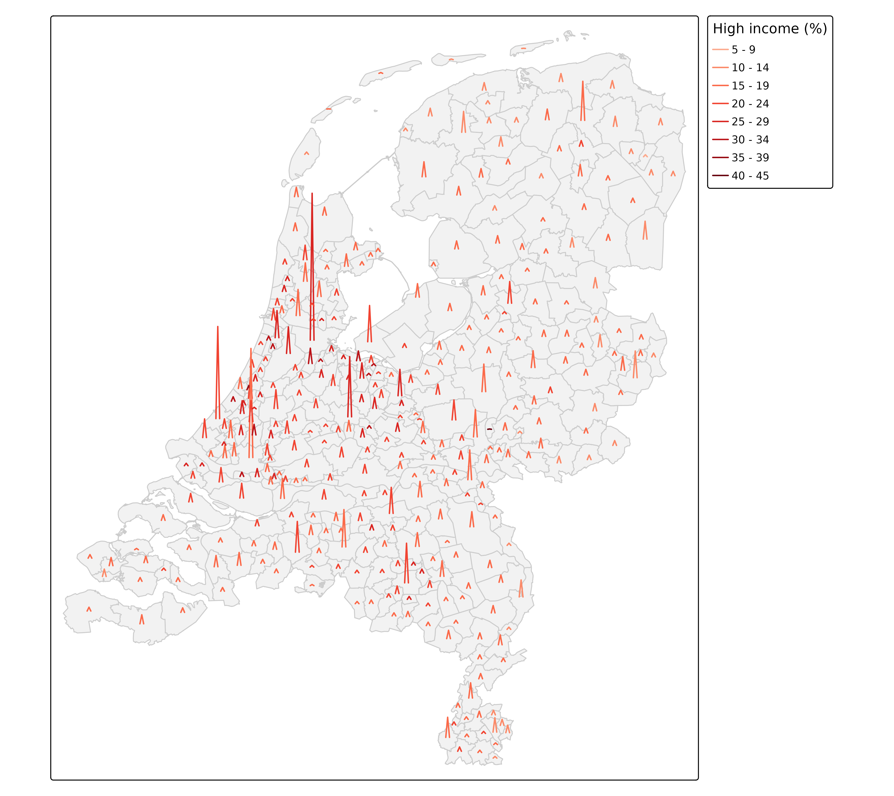

Introduction
tmap is designed to be extended. This article gives an overview of the existing extension packages, the ways in which tmap can be extended, and how to get started.
Extension packages
The following packages extend tmap. Together with tmap and the color palette package cols4all, they are called the tmapverse.
| package | what it adds | extends |
|---|---|---|
| tmap.mapgl | the modes "maplibre" and "mapbox", 3D
polygons, and components such as a geocoder |
modes, layers, components |
| tmap.glyphs | glyphs: donuts, pies, and flowers | layers, scales |
| tmap.cartogram | contiguous, non-contiguous, and Dorling cartograms | layers |
| tmap.networks | networks: sfnetworks and spatstat
linnet objects, edges and nodes |
spatial data classes, layers |
| tmap.sources | remote and tiled data sources, such as PMTiles and Overture Maps | spatial data classes |
The articles in the menu Extensions show these packages in
action. An extension package does not have to be attached: its layer
functions can also be called directly,
e.g. tmap.glyphs::tm_donuts(). The function
tmap_overview() shows which layers and components are
available in which mode, and from which package they come.
Ways to extend tmap
A map is made in three steps: spatial data are read, drawn as layers, and shown by a graphics engine (the mode). Each step can be extended:
-
Map layers: what is
drawn. A new layer may come with new map variables and a spatial
transformation, e.g.
tm_donuts()(tmap.glyphs) andtm_cartogram()(tmap.cartogram). -
Spatial data
classes: what can be drawn, e.g.
sfnetworkobjects (tmap.networks). -
Modes: where it is drawn,
e.g.
"maplibre"(tmap.mapgl).
Two other building blocks can also be extended:
-
Map components:
elements outside the data layers, e.g.
tm_geocoder()(tmap.mapgl). -
Scales: how data values are
mapped to visual values, e.g.
tm_scale_composition()(tmap.glyphs). This is rarely needed, and the most difficult one.
The functions that are needed for extensions are exported and
documented as internal functions, e.g. ?tmapScale.
Map layers
Example: a spike map layer
The easiest way to create a new layer is to derive it from an existing one. As an example, we create a layer for spike maps: maps with a spike on each feature, with a height that is proportional to a data variable.
A spike is a line, so the new layer is derived from
tm_lines(). Only the geometries have to be changed: each
feature is replaced by a spike. This is done by a spatial
transformation function. It takes the geometries
(shpTM$shp), the values of the map variables that are used
in the transformation (here height), and the arguments
args, and returns new geometries with their IDs:
tmapTransSpikes = function(shpTM, height, ord__, plot.order, args, scale) {
shp = shpTM$shp
pts = sf::st_coordinates(sf::st_point_on_surface(shp))
bb = sf::st_bbox(shp)
h = height / max(height, na.rm = TRUE) * args$height * (bb[4] - bb[2])
w = args$width * (bb[3] - bb[1]) / 2
spikes = lapply(seq_len(nrow(pts)), function(i) {
x = pts[i, 1]
y = pts[i, 2]
sf::st_linestring(rbind(c(x - w, y), c(x, y + h[i]), c(x + w, y)))
})
list(shp = sf::st_sfc(spikes, crs = sf::st_crs(shp)), tmapID = shpTM$tmapID, bbox = shpTM$bbox)
}The layer function creates a tm_lines() layer and
changes a few of its fields:
-
layer: the name of the new layer, followed by the layer it is derived from; -
trans.fun: the transformation function; -
trans.aes: the map variables that are used by the transformation, created withtmapScale(). Here, the data values are passed on as they are (tm_scale_asis()); -
trans.args: other arguments for the transformation function; -
trans.apply_to:"this"means that the transformation is only applied to this layer. With"this_following", it is also applied to the layers that follow in the sametm_shape()group (used by cartograms).
tm_spikes = function(height, max.height = 0.2, width = 0.01, ...) {
layer = tm_lines(...)
layer[[1]] = within(layer[[1]], {
layer = c("spikes", "lines")
trans.fun = tmapTransSpikes
trans.aes = list(height = tmapScale(aes = "area", value = height, scale = tm_scale_asis(),
legend = tm_legend_hide(), chart = tm_chart_none(), free = NA))
trans.args = list(height = max.height, width = width)
trans.apply_to = "this"
})
layer
}The other arguments, such as col and lwd,
are passed on to tm_lines(), so they work as usual,
including scales and legends:
tm_shape(NLD_muni) +
tm_polygons(fill = "grey95", col = "grey80") +
tm_shape(NLD_muni) +
tm_spikes(height = "population", width = 0.006, lwd = 1.5,
col = "income_high",
col.scale = tm_scale_intervals(values = "brewer.reds", values.range = c(0.3, 1)),
col.legend = tm_legend("High income (%)"))
Since there is no plotting method for "spikes", the
plotting method of "lines" is used. Therefore, the new
layer works in all modes, including view mode and the modes of
tmap.mapgl. A layer that needs its own drawing, such as
the donuts of tmap.glyphs, has a plotting method per
mode (see plotting methods).
In a package, the transformation function is exported, and the layer
function gets the arguments of tm_lines() explicitly, with
documentation, as in tmap.cartogram::tm_cartogram().
The layer element
A layer function returns a list (tm_element_list()) with
one tm_element(). The most important fields are:
| field | meaning |
|---|---|
layer |
the layer name, optionally followed by the layers it is derived
from, e.g. c("donuts", "symbols")
|
mapping.aes |
the map variables: a named list of tmapScale() objects
(value, scale, legend, chart, and free) |
gpar |
the graphical parameters for drawing, created with
tmapGpar(): "__fill" refers to the map
variable fill
|
trans.fun, trans.aes,
trans.args, trans.apply_to
|
the spatial transformation, e.g. tmapTransCentroid()
for symbols |
tpar |
the transformation parameters (tmapTpar()) |
mapping.args |
other arguments for the plotting methods |
plot.order, zindex, group,
popup.*, hover, id
|
as in the standard layers |
Spatial transformations
A spatial transformation function changes the geometries before they
are drawn. It is called with the geometries (shpTM), the
values of the map variables of trans.aes, the plotting
order, and trans.args, as in the spike map example. It
returns a list with the new geometries (shp), their IDs
(tmapID), and the bounding box (bbox). tmap
applies the transformation per facet, and reprojects the result to the
crs of the map.
Plotting methods
The layer is drawn by the plotting method of each mode:
tmapGridDataPlot() (plot mode),
tmapLeafletDataPlot() (view mode), and
tmapMaplibreDataPlot() and
tmapMapboxDataPlot() (tmap.mapgl). These
are S3 generics that dispatch on the class
tm_data_<layer>,
e.g. tmapGridDataPlot.tm_data_donuts(). A method can modify
the data, and then pass it on to the method of the layer it is derived
from with NextMethod(), as tmap.networks
does. If a layer has no method for a mode, the method of the layer it is
derived from is used. The methods for the modes of
tmap.mapgl are registered with
@exportS3Method tmap.mapgl::tmapMaplibreDataPlot, so that
tmap.mapgl is only needed when it is installed.
New map variables
A layer may need a map variable that tmap does not have, such as
height for 3D polygons in tmap.mapgl. A
new map variable needs:
- default values, submitted with
tmapSubmitOptions()in the.onLoad()function of the package: the constant value (value.const), the values for missing data (value.na), the default palettes or ranges (values.var,values.range), and the default scales (scales.var); - functions named
tmapValues<Type>_<variable>(), which are called by name:Check(are the visual values valid?),IsDiv(are they diverging?),Range,Scale(apply the globalscale),Colorize(apply color effects, such as sepia),VVandCVV(the visual values for numeric and categorical scales), andSubmit.
The functions of an existing map variable can often be reused,
e.g. tmapValuesCheck_height = tmap::tmapValuesCheck_size.
Use tmap_options("value.const") to see the defaults of the
existing map variables.
Spatial data classes
tmap supports sf, stars, terra, and sp objects. Another spatial data class is supported via S3 methods:
-
tmapShape(): converts the object into geometries (sfcor a stars dimensions object) and a data table; -
tmapGetShapeMeta1()andtmapGetShapeMeta2(): return metadata, such as the names and levels of the data variables; -
tmapSubsetShp(): selects the data variables that are needed; -
tmapReproject(): only needed when the geometries are not converted to sf or stars, as in tmap.sources.
tmap.networks (classes sfnetwork and
linnet) and tmap.sources (data sources
specified by a character string) are examples. A new data class often
comes with a layer for it, e.g. tm_network().
Modes
A mode is a graphics engine, such as grid (plot mode) and leaflet (view mode). This is the most extensive type of extension; tmap.mapgl is the reference implementation.
A new mode is registered with
tmapSubmitOptions(options = list(modes = list(<mode> = list(name = "<Name>", ...))))
in the .onLoad() function of the package. The list contains
the options of the mode, and <Name> is used in the
names of its functions, e.g. tmapMaplibreInit():
- initialization and output:
Init,Shape(per facet),Overlay,Run,Arrange(fortmap_arrange()), andProviders(basemaps); - data layers: the S3 generic
DataPlot, andAuxPrepareandAuxPlotfor basemaps, tiles, and grid lines; - components: the S3 generics
CompPrepare,CompWidth,CompHeight, andCompPlot, andCompfor the legends; - facet labels, axis labels, and grid labels:
Wrap,Xtab,Xlab,Ylab,GridXLab, andGridYLab; -
shiny integration: methods for
tmapOutputGS()andtmapProxyGS().
Two other things make a new mode fit in with the existing ones:
- styles: with the argument
styleOptionsoftmapSubmitOptions(), a style such as"cobalt"gets options for the new mode, e.g. a dark basemap; - basemaps: different modes have different basemaps.
tmapSubmitBasemapEquivalents()declares which basemaps are similar across modes (e.g. light gray, dark, or satellite), so that a map can be shown in another mode with a similar basemap.
Map components
A map component, such as tm_geocoder() of
tmap.mapgl, is a tm_element() with the
subclass c("tm_<component>", "tm_component"), and
methods tmap<Mode>CompPrepare(),
tmap<Mode>CompWidth(),
tmap<Mode>CompHeight(), and
tmap<Mode>CompPlot() for each mode in which it is
available. Components are positioned and grouped by tmap (see component
layout).
Scales
A scale determines how data values are mapped to visual values, and what the legend looks like. A new scale is rarely needed: the existing scales cover most data types, and their arguments are flexible. It is also the most difficult extension, since a scale has to handle all map variables, missing values, legends, and charts. A scale consists of two functions:
-
tm_scale_<name>(), which returns the scale arguments as a list with classc("tm_scale_<name>", "tm_scale", "list")and the elementFUN, the name of the function that applies the scale; - that function, e.g.
tmapScaleComposition(), which maps the data values to visual values, and creates the legend and chart.
The scale functions of tmap, such as
tmapScaleIntervals(), are a good starting point. See
tmap.glyphs::tm_scale_composition() for an example: a scale
for the composition of a glyph, which is used together with a new
layer.
Ideas
There is plenty of room for new extensions. Some ideas: other glyph types, such as radar charts; flow maps; hexagonal binning (as a spatial transformation); new modes, e.g. based on deck.gl or highcharter (for which proofs of concept exist); and spatial data classes of other packages. Feel free to reach out via GitHub.